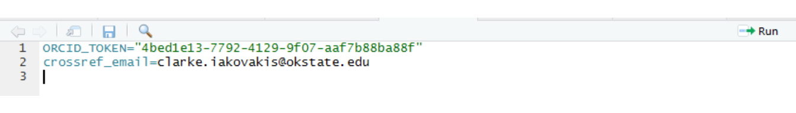

I ask that you please complete the following before our session. Please contact me if you have problems with any of this.
To download R, go to https://www.r-project.org/. Click on CRAN (Comprehensive R Archive Network) under Download, and scroll down to your country. Select the download link corresponding to the city that is geographically closest to you.
Go to https://www.rstudio.com/products/RStudio/#Desktop to download the RStudio desktop software. RStudio is a user interface for working with R. It is called an Integrated Development Environment (IDE) and acts as a sort of wrapper around the R language. You can use R without RStudio, but it’s much more limiting. RStudio makes it easier to import datasets, create and write scripts, and has an autocomplete activated for functions and variables you’ve already assigned. RStudio makes using R much more effective, and is also free and open source.
Open R Studio and go to File > New File > R Script.
Copy the first line of code below and paste it into the blank R script. Then click the Run button in the upper right corner of that window.
install.packages("rorcid")
library(rorcid)It will print some lines of code and make take a few seconds. If successful, it will tell you the packaged was successfully unpacked. Now run the next line, library(rorcid). As long as it doesn’t say "there is no package called ‘rorcid’, you should be good.
Do the same thing with the remaining packages:
install.packages("tidyverse")
library(tidyverse)
install.packages("anytime")
library(anytime)
install.packages("httpuv")
library(httpuv)
install.packages("rcrossref")
library(rcrossref)
install.packages("usethis")
library(usethis)
install.packages("janitor")
library(janitor)
install.packages("roadoi")
library(roadoi)rorcidNext, you need to authenticate with an ORCID API Key. According to the ORCID API tutorial, anyone can receive a key to access the public API.
Run the line orcid_auth() from the setup_code script or copy/paste from below. You should see a message stating: no ORCID token found; attempting OAuth authentication and a window will open in your default internet browser. Log-in to your orcid account. You will be asked to give rorcid authorization to access your ORCID Record for the purposes of getting your ORCID iD. Click “Authorize.”
If successful, the browser window will state: “Authentication complete. Please close this page and return to R.” Return to R Studio and you should see in your R console the word Bearer, followed by a long string of letters and numbers. These letters and numbers are your API key. At this point, this should be cached locally in your working directory.
Highlight and copy the API key (the letters and numbers only–exclude the word “Bearer” and the space). Paste it into the quotation marks on the setup_code script in the line ORCID_TOKEN="copy and paste your token here". Copy this line to the clipboard.
Click on the line that says usethis::edit_r_environ() and click the Run button. A new window will open in R Studio. Paste the line into that window. Leave the tab open.
Navigate back to the setup_code and run the next orcid_auth() line. It should print the token to your R console.
orcid_auth()
ORCID_TOKEN="copy and paste your token here"
usethis::edit_r_environ()
library(rorcid)
orcid_auth()rcrossrefIn the setup_code script, replace your email in crossref_email=name@example.com. Copy this line to the clipboard.
Go back to the window that opened when you ran edit_r_environ() and paste in the crossref_email.
Then press enter to create a new line below crossref_email=name@example.com, and leave it blank.
Your R environment should look like this

Click File > Save. Then in the R Studio navigation menu, click Session > Restart R.
crossref_email=name@example.com
usethis::edit_r_environ()roadoiAs with rcrossref, your API calls to Unpaywall must include a valid email address where you can be reached in order to keep the service open and free for everyone.
Run this line of code, replacing the example with your email address:
options(roadoi_email = "name@example.com")Your email address will now be shared with Unpaywall.